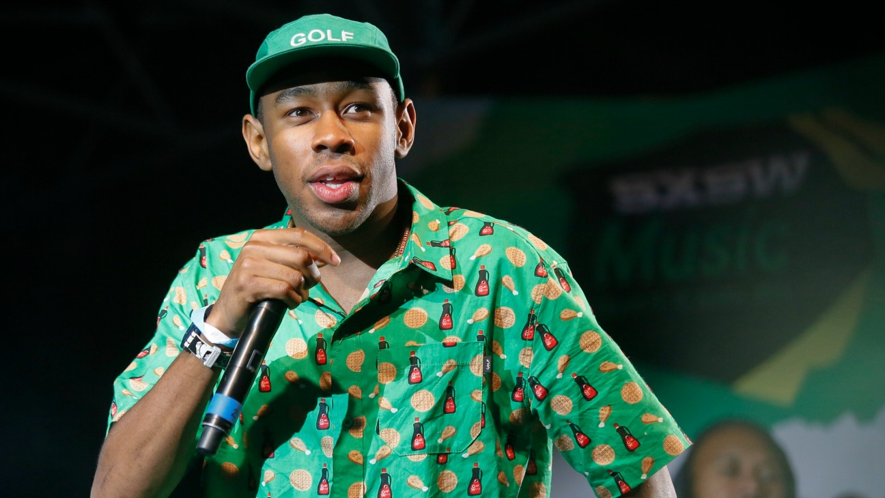

ABOUT THE ARTIST
One of the more fascinating artistic evolutions since the late 2000s has been that of Tyler, The Creator. The rapper and producer surfaced as a founding member of Odd Future, an outlandish alternative rap crew that gradually permeated the mainstream as it begat a multitude of related projects. A high percentage of these recordings, including Earl Sweatshirt's Earl (2010), Odd Future's The OF Tape, Vol. 2 (2012), and Frank Ocean's Grammy-winning Channel Orange (2012), have been made with Tyler's deep involvement. As a solo artist, Tyler's output has gleefully swung from purposefully distasteful and crude to charming and sophisticated, sometimes blurring the distinction between the extremes. All four of his own albums, namely Goblin (2011), Wolf (2013), Cherry Bomb (2015), and Flower Boy (2017), have debuted within the Top Five of the Billboard 200, distinguished most (above all other qualities) by his gravelly voice and an irascible disposition befitting a collision-shop owner. Tyler reached a new level of acceptance with the kaleidoscopic latter LP, nominated for a Grammy in the category of Best Rap Album. Since then, Tyler has continued to extend his reach outside the Odd Future universe, and has issued stray singles and an EP, Music Inspired by Illumination & Dr. Seuss' The Grinch (2018).